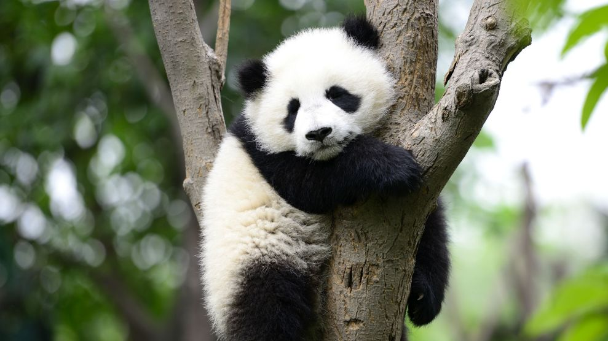
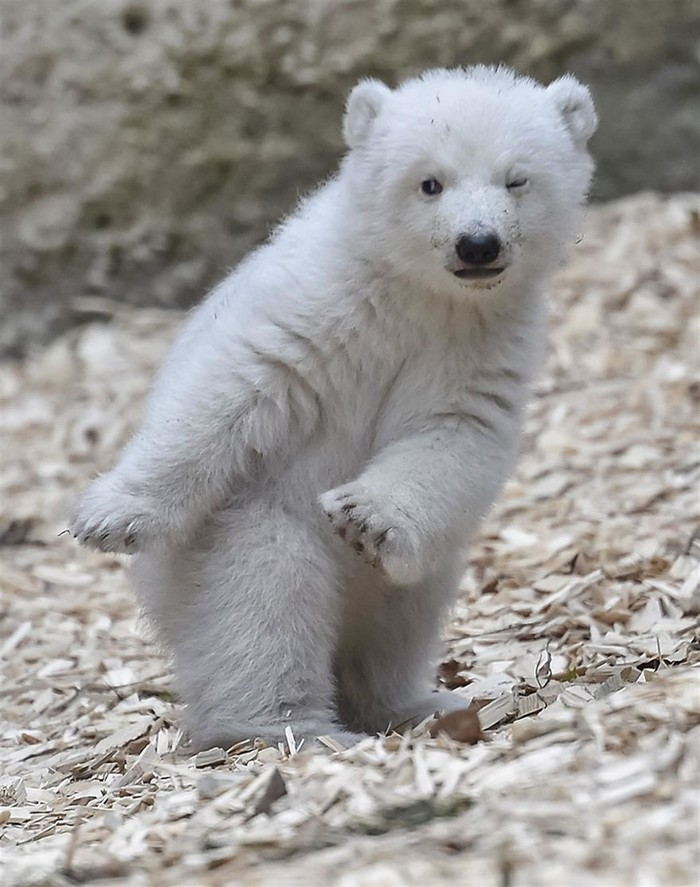
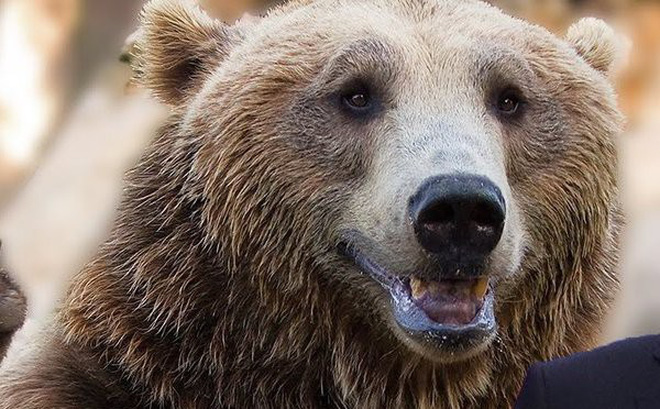

|  |  |  |
| The giant panda (Ailuropoda melanoleuca) | The polar bear (Ursus maritimus) | The brown bear (Ursus arctos) |
|
The giant panda has a body shape typical of bears. It has black fur on its ears, eye patches, muzzle, legs, arms and shoulders. The rest of the animal's coat is white. Although scientists do not know why these unusual bears are black and white, speculation suggests that the bold colouring provides effective camouflage in their shade-dappled snowy and rocky habitat |
The polar bear (Ursus maritimus) is a hypercarnivorous bear whose native range lies largely within the Arctic Circle, encompassing the Arctic Ocean, its surrounding seas and surrounding land masses. It is a large bear, approximately the same size as the omnivorous Kodiak bear (Ursus arctos middendorffi).A boar (adult male) weighs around 350–700 kg (772–1,543 lb) |
The brown bear (Ursus arctos) is a bear species that is found across much of northern Eurasia and North America. In North America, the populations of brown bears are often called "grizzly bears". It is one of the largest living terrestrial members of the order Carnivora, rivalled in size only by its closest relative, the polar bear (Ursus maritimus), which is much less variable in size and slightly larger on average. |